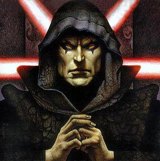
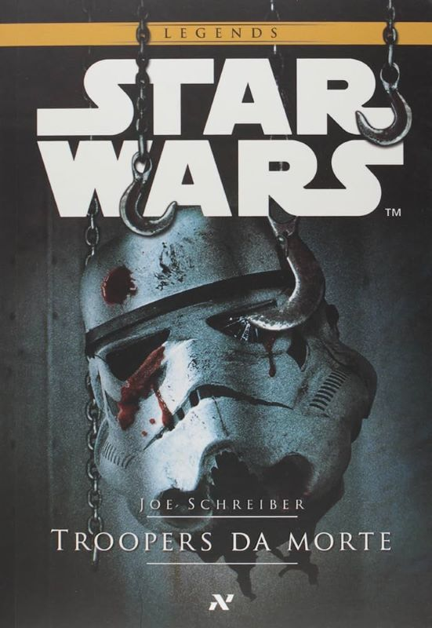
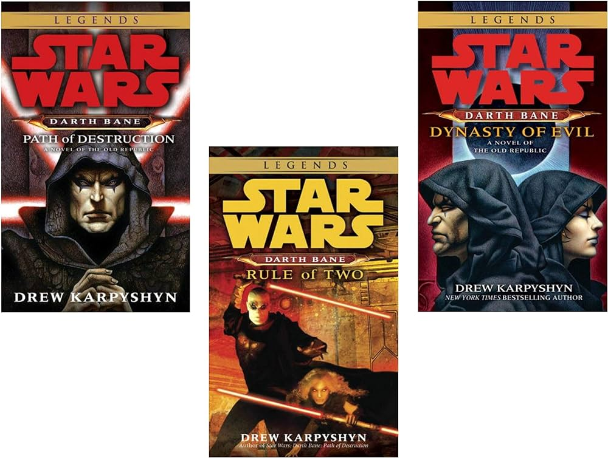

Quiz
Teste o seu conhecimento sobre livros de Star Wars (Legends)! Responda um quiz com 10 perguntas e veja o resultado. Você poderá conferir seu histórico de acertos na seção Dashboard.
1ª Pergunta:
O personagem Darth Bane é mais conhecido por ter criado:
A. O Império Sith.
B. A Estrela da Morte.
C. A Regra de Dois.
D. O relâmpago da Força.
B. A Estrela da Morte.
C. A Regra de Dois.
D. O relâmpago da Força.
2ª Pergunta:
Onde se passa a maior parte da história no livro Troopers da Morte?
A. Dentro da Estrela da Morte.
B. No planeta Tatooine.
C. Em uma estação espacial.
D. Em um Star Destroyer abandonado.
B. No planeta Tatooine.
C. Em uma estação espacial.
D. Em um Star Destroyer abandonado.
3ª Pergunta:
Qual livro deu continuidade a história dos filmes originais?
A. Herdeiro do Império.
B. A Ascensão e a Queda de Darth Vader.
C. Darth Bane: Dinastia do Mal.
D. O Último Comando.
B. A Ascensão e a Queda de Darth Vader.
C. Darth Bane: Dinastia do Mal.
D. O Último Comando.
4ª Pergunta:
A Trilogia Thrawn apresenta uma criatura capaz de criar uma barreira contra a Força. Qual é o nome desta criatura?
A. Dianoga.
B. Gundark.
C. Leviathan.
D. Ysalamir.
B. Gundark.
C. Leviathan.
D. Ysalamir.
5ª Pergunta:
Qual era o cargo do antagonista Thrawn, na trilogia de mesmo nome?
A. Imperador.
B. General.
C. Grão-Almirante.
D. Líder da Inquisição.
B. General.
C. Grão-Almirante.
D. Líder da Inquisição.
6ª Pergunta:
Cronologiamente, quando foi escrito o livro O Caminho Jedi, dentro do universo de Star Wars?
A. Após Yoda se tornar Grande Mestre.
B. Foi escrito por Luke Skywalker, após a queda do Império.
C. Aproximadamente 3 mil anos antes dos filmes originais.
D. Alguns anos após Darth Bane: Dinastia do Mal.
B. Foi escrito por Luke Skywalker, após a queda do Império.
C. Aproximadamente 3 mil anos antes dos filmes originais.
D. Alguns anos após Darth Bane: Dinastia do Mal.
7ª Pergunta:
Qual característica dos livro da coleção Secrets of the Galaxy os diferencia dos demais livros?
A. Possuem histórias muitos mais longas.
B. São escritos como se realmente existissem no universo de Star Wars.
C. Apresentam curiosidades compiladas por diversos autores.
D. Contam histórias paralelas, não relacionadas com a saga principal.
B. São escritos como se realmente existissem no universo de Star Wars.
C. Apresentam curiosidades compiladas por diversos autores.
D. Contam histórias paralelas, não relacionadas com a saga principal.
8ª Pergunta:

No livro Sombras do Império, o princiapl objetivo do antagonista Príncipe Xizor era:
A. Vingança contra Darth Vader.
B. Se unir ao império.
C. Restaurar a influência de seu clã.
D. Destruir a rebelião.
B. Se unir ao império.
C. Restaurar a influência de seu clã.
D. Destruir a rebelião.
9ª Pergunta:
Em qual época se passa a Trilogia Darth Bane?
A. Final da Velha República.
B. Era de Ouro dos Sith.
C. Durante a Escuridão de 100 anos.
D. Segunda metade da Alta República.
B. Era de Ouro dos Sith.
C. Durante a Escuridão de 100 anos.
D. Segunda metade da Alta República.
10ª Pergunta:
Quem é o 2º antagonista principal da Trilogia Thrawn?
A. Rukh.
B. Capitão Pellaeon.
C. Joruus C'Baoth.
D. Talon Karrde.
B. Capitão Pellaeon.
C. Joruus C'Baoth.
D. Talon Karrde.